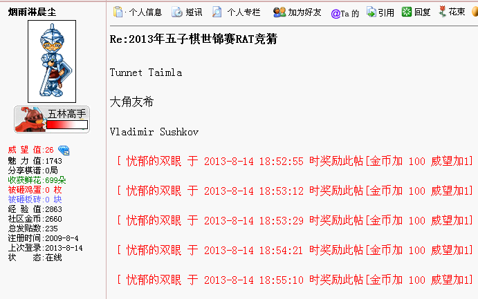
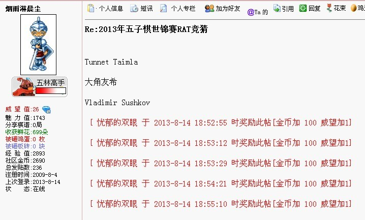
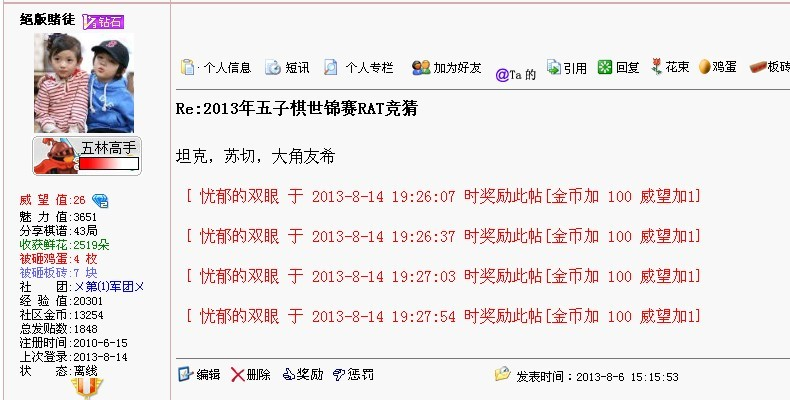

话说这次竞猜真是太能蒙了。
#1 话说这次竞猜真是太能蒙了。 作者：烟雨淋晨尘 发表时间：2013-8-14 19:21:35
#2 Re:话说这次竞猜真是太能蒙了。 作者：魔铃 发表时间：2013-8-14 19:28:31
"每猜中一位+1威望，猜中冠军额外+1威望（如没有注明，默认第一个名字为竞猜的冠军），三位全猜中额外+2威望"#3 Re:话说这次竞猜真是太能蒙了。 作者：烟雨淋晨尘 发表时间：2013-8-14 19:31:29
这么说是6威望？不是5威望？数学不好，没算明白，那等威望都发完了，发威望的人有闲空了，我再管他们要啊。#4 Re:话说这次竞猜真是太能蒙了。 作者：絕版賭徒 发表时间：2013-8-14 19:34:32


“
请于8月7日下午14：15（此为截止时间）前跟帖回复你所预测的RAT前三名
每猜中一位+1威望，猜中冠军额外+1威望（如没有注明，默认第一个名字为竞猜的冠军），三位全猜中额外+2威望
投票仅为直观显示选手热门程度，与奖励无关
本次竞猜解释权归论坛管理组”
按规则理解，17楼和37楼，都应该得6威望。
是我理解错了？
#5 Re:话说这次竞猜真是太能蒙了。 作者：烟雨淋晨尘 发表时间：2013-8-14 19:49:10
讲讲这次蒙的心路历程吧。
首先，爱沙尼亚主场，爱沙尼亚棋手又多年未染指冠军，觉得该轮到他们了，又因为坦克看着比较帅，就选坦克了。
然后，对于这种时间比较长的比赛，苏切超强的体力，应该会占到三强一席。
再然后，三强另外一席，其实是有些犹豫了，但是考虑到，兰教练毕竟第一次世锦，而曹冬选手，印象中自上次夺冠后，比赛成绩似乎就不是太定，而貌似大角在日本国内比赛，还能时有和中村掰掰手腕的时候，而且大量，长时对局的积累，理智上便更倾向于猜大角，而非情感上倾向于中国棋手。
最后，苏切和大角谁排在前面的问题上，个人觉得苏切多次败在中村手下，或许还是棋风相克，日本棋手的写意棋风，个人也是喜欢，无关胜负，所以就把大角排在了前面。
而关于冈部最后一轮必败的预测，就纯是靠直觉了。
中国棋手这次没有进入三强，不是世界末日，反而让更多的人，更冷静看待外国棋手的进步。不是坏事情。
#6 Re:话说这次竞猜真是太能蒙了。 作者：掌棋如烟 发表时间：2013-8-14 19:54:33
为什么这段话不早点偷偷告诉我,55555555555555#7 Re:话说这次竞猜真是太能蒙了。 作者：烟雨淋晨尘 发表时间：2013-8-14 20:01:20
回6楼，这算不算爆料呢？要是算，下次再有竞猜前，我就直接去抱朴，开贴，把大家都带歧路上去。#8 Re:话说这次竞猜真是太能蒙了。 作者：掌棋如烟 发表时间：2013-8-14 20:09:11
欢迎来爆料,如果爆的准,给你威望奖励#9 Re:话说这次竞猜真是太能蒙了。 作者：烟雨淋晨尘 发表时间：2013-8-14 20:23:29
那必须往准了爆，话说上届智运会金币下注竞彩，女团和男单，也都是一枪就中的。
#10 Re:话说这次竞猜真是太能蒙了。 作者：维尔斯特拉斯 发表时间：2013-8-14 20:26:17
膜拜大神#11 Re:话说这次竞猜真是太能蒙了。 作者：掌棋如烟 发表时间：2013-8-14 20:29:08
来爆一下宜兴赛吧!!!!!#12 Re:话说这次竞猜真是太能蒙了。 作者：伤情路 发表时间：2013-8-14 20:44:55
膜拜大神神预测